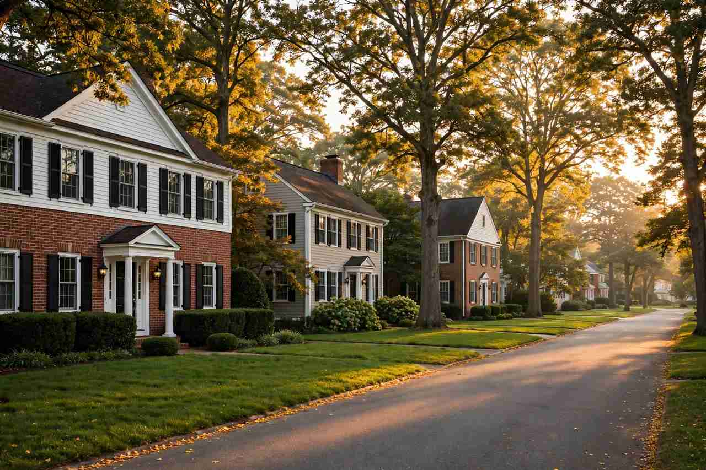

Rodent Control · Milton, DE
Trusted Rodent Control in Milton, DE
If rodents have moved into your Milton home or business, Murvo can help today. Our local, licensed crews provide same-day inspection, targeted removal, durable exclusion, and cleanup, all under one flat-rate written quote with a written guarantee. No hourly billing and no surprise add-ons, just rodent specialists serving Milton and communities throughout Sussex County every day of the week. Local crews cover 1 ZIP codes in the Milton area, from Ellendale to the far side of Sussex County.
24/7Availability
1ZIP codes covered
Same-dayResponse
Licensed · Upfront options · Written guarantees · Fully insured
Milton at a glance
Local Rodent Control for Milton, DE.
Sussex County
Countysouthern Delaware
RegionDover · 29 mi
Nearest metro29 miles southeast of Dover
From Dover1
ZIP codes covered Service by service in Milton
Rodent Control Services Available in Milton
Thirty rodent services, one local standard in Milton: inspection-led, exclusion-first, and quoted in writing before work begins. Browse the full list for Sussex County below - each section explains what the service involves here, what it typically costs nationally, and how fast we can start.
- 01Rodent Control↗
- 02Rodent Inspection↗
- 03Rodent Removal↗
- 04Rodent Exclusion↗
- 05Rodent Proofing↗
- 06Rat Control↗
- 07Mice Control↗
- 08Mouse Removal↗
- 09Rat Removal↗
- 10Rodent Trapping↗
- 11Rodent Baiting↗
- 12Rodenticide Application↗
- 13Attic Rodent Removal↗
- 14Crawl Space Rodent Removal↗
- 15Wall Rodent Removal↗
- 16Kitchen Rodent Control↗
- 17Garage Rodent Control↗
- 18Commercial Rodent Control↗
- 19Residential Rodent Control↗
- 20Emergency Rodent Removal↗
- 21Same-Day Rodent Control↗
- 22Rodent Damage Repair↗
- 23Rodent Waste Cleanup↗
- 24Rodent Disinfection↗
- 25Rodent Odor Removal↗
- 26Dead Rodent Removal↗
- 27Rodent Dropping Cleanup↗
- 28Rodent Exclusion for Roofs↗
- 29Rodent Exclusion for Vents↗
- 30Rodent Exclusion for Chimneys↗
Rodent Control in Milton
Rodent Control in Milton
What does a finished job actually look like? No new droppings, no nighttime movement, and no open route back inside. That is the standard Murvo works toward in Milton, with background-checked technicians, a written workmanship guarantee, and follow-up checks that confirm the quiet is real rather than temporary luck.
When you need rodent control in Milton, the job starts with what is actually happening in your part of Sussex County. Murvo crews work Milton every week, so they know how Norway rat (Rattus norvegicus) and House mouse (Mus musculus) behave around historic rowhomes, brick twins, older apartments, and wooded suburban single-family homes here - and where they get in: alley-facing doors and garages, basement foundations, sewer laterals, and gaps around utility lines. We arrive equipped for the full job, confirm the flat rate in writing before work begins, and cover the whole Milton area, including Ellendale, Georgetown. No call-center runaround and no open-ended hourly billing - just a local crew, a clear plan, and a written quote you approve first. Coverage for rodent control spans 1 ZIP codes in Sussex County, including 19968.
We start by identifying whether Norway rat (Rattus norvegicus), House mouse (Mus musculus), or both are active, because each species nests, feeds, and travels differently. Nothing is sealed while animals remain inside. Traps are placed on proven runways along walls, beams, and pipe runs, checked on schedule, and adjusted as catches change. Once numbers fall, exclusion sealing closes the route back in, droppings and nesting debris are removed hygienically, and follow-up monitoring checks the attic, crawl space, and kitchen until readings stay clear. That order protects your home.
After you book, we confirm a time window and your background-checked technician arrives in a marked vehicle with identification. Once approved, trapping and sealing begin, and follow-up visits are scheduled before we leave, with the guarantee in writing. They walk the property with you, inspect inside and out, and explain what they find with photos. You receive a flat-rate written quote before any work starts. No work begins without your approval.
Need help quickly in Milton? Call any time — the emergency line is staffed 24/7, and same-day rodent control appointments are available in most areas. We inspect first, explain the plan in plain language, and put the flat rate in writing before work starts. Around Milton, historic rowhomes, brick twins, older apartments, and wooded suburban single-family homes give rodents the most cover, which is why entry points get checked before traps are set.
The honest answer is that it depends on species, activity level, and how much sealing your home needs, which is why Murvo inspects first and then gives you a flat-rate quote in writing. For national context only, Angi's 2026 data averages rat and mouse removal and control at $396, typically $189 to $655; that is not a Murvo price, and your written quote is the figure you pay.
Rodent Inspection in Milton
Rodent Inspection in Milton
You do not need to see a rodent to have a rodent problem in Milton. Droppings in the attic, gnaw marks near alley-facing doors and garages, basement foundations, sewer laterals, and gaps around utility lines, or noises after dark are enough reason to book a rodent inspection. Murvo technicians check the whole property, photograph what they find, and give you a prioritized plan plus a flat-rate written quote for any work recommended.
In Milton, rodent inspection is not a generic spray-and-go service. Rodents exploit alley-facing doors and garages, basement foundations, sewer laterals, and gaps around utility lines in historic rowhomes, brick twins, older apartments, and wooded suburban single-family homes, and a fix that ignores those routes does not last. Murvo's Milton team inspects first, shows you the evidence - droppings, gnaw marks, entry gaps - and then lays out the work with a flat-rate written quote. We serve all of Sussex County from Milton, including Ellendale, Georgetown, and every job is covered by our written workmanship guarantee. Homes near Ellendale tend to show activity first in Milton, which is why inspections start with alley-facing doors and garages, basement foundations, sewer laterals, and gaps around utility lines.
The inspection starts outside, where we check the foundation, siding, pipe penetrations, garage doors, and roof junctions, because mice can squeeze through a gap the width of a pencil. We also note where historic rowhomes, brick twins, older apartments, and wooded suburban single-family homes create hidden routes through alley-facing doors and garages, basement foundations, sewer laterals, and gaps around utility lines. Inside, we examine the attic, crawl space, insulation, stored items, and food areas for droppings, nests, rub marks, and gnaw damage. Every finding is photographed and explained, and recommendations are marked urgent or preventive so you can stage the work sensibly.
After booking, we confirm your time window by text or call. On arrival, your background-checked technician checks in, protects floors and access points, and works through a set inspection checklist inside and out. Before leaving, they review photos and priorities with you, leave the written findings, and schedule any follow-up work you approve. The inspection itself is backed by licensed, insured service and our written workmanship guarantee on quoted work.
You do not have to wait days for answers in Milton. Same-day rodent inspection appointments are available in most areas, urgent calls are taken 24/7, and most home inspections take under an hour. You finish the visit with photos, written findings, and flat-rate pricing for anything we recommend. Around Milton, historic rowhomes, brick twins, older apartments, and wooded suburban single-family homes give rodents the most cover, which is why entry points get checked before traps are set.
Nationally, a professional rodent inspection typically runs $100 to $200 according to Angi's 2026 data, and it is often credited toward the job if you proceed. Murvo confirms your exact rodent inspection price before the visit and quotes any follow-up work as a flat rate in writing after inspection, so the figure you approve is the figure you pay, with no hourly billing.
Rodent Removal in Milton
Rodent Removal in Milton
Removal works best when it is species-specific. In Milton, historic rowhomes, brick twins, older apartments, and wooded suburban single-family homes give Norway rat (Rattus norvegicus) and House mouse (Mus musculus) warm voids, stored food, and quiet nesting corners reached through alley-facing doors and garages, basement foundations, sewer laterals, and gaps around utility lines. Our licensed, insured technicians assess numbers and access routes first, then set traps on proven runways and return on schedule until catches fall to zero and monitoring stays clear.
Homeowners in Milton call Murvo for rodent removal because the problem here is specific: Norway rat (Rattus norvegicus) pressure around historic rowhomes, brick twins, older apartments, and wooded suburban single-family homes, tight access at alley-facing doors and garages, basement foundations, sewer laterals, and gaps around utility lines, and activity that follows the local season. Our Sussex County crews diagnose the real source before recommending work, explain the options in plain language, and quote one flat rate in writing. Across Milton - including Ellendale, Georgetown - every visit is backed by licensed, insured technicians and our written workmanship guarantee. Homes near Ellendale tend to show activity first in Milton, which is why inspections start with alley-facing doors and garages, basement foundations, sewer laterals, and gaps around utility lines.
Removal here is measured in records, not impressions. That log shows where activity concentrates, where it is fading, and where a placement needs to move. When the log stays empty across repeat checks, removal is genuinely finished. Sealing recommendations follow immediately, because a clear home with open gaps will not stay clear for long in Milton. Each trap is numbered, mapped, and checked on schedule, and every catch is logged against its location. That record also protects you, because it shows exactly when activity ended rather than when visits simply stopped.
Once you book rodent removal in Milton, we agree a time window and your technician arrives with traps, protective equipment, and a clear plan. Progress is photographed and shared with you throughout the program. The first visit confirms activity and sets traps; return visits clear and reset them on schedule. When catches reach zero, we walk through the results, discuss sealing, and confirm your written guarantee before closing the job. Nothing is left unexplained.
For active infestations in Milton, rodent removal can usually start the same day you call, and our team answers 24/7 when a rodent is loose in a living area. The first visit confirms activity and sets traps straight away; return visits then clear and reset them until monitoring shows the property is completely clear. Around Milton, historic rowhomes, brick twins, older apartments, and wooded suburban single-family homes give rodents the most cover, which is why entry points get checked before traps are set.
How many animals are active, which species they are, and how much sealing follows removal all shape the price, so we assess first and then quote one flat rate in writing. Angi's 2026 national context — an average of $396 and a typical $189 to $655 range for rat and mouse removal — is provided for comparison only; your written quote is the exact Murvo figure.
Rodent Exclusion in Milton
Rodent Exclusion in Milton
Rats can pass through a hole the size of a quarter, and mice through one far smaller, which is why historic rowhomes, brick twins, older apartments, and wooded suburban single-family homes in Milton hide so many working entry points around alley-facing doors and garages, basement foundations, sewer laterals, and gaps around utility lines. Our technicians inspect soffits, eaves, pipe entries, foundation cracks, and door sweeps in detail, then prioritize the openings that matter most for Norway rat (Rattus norvegicus) and House mouse (Mus musculus) locally.
When you need rodent exclusion in Milton, the job starts with what is actually happening in your part of Sussex County. Murvo crews work Milton every week, so they know how Norway rat (Rattus norvegicus) and House mouse (Mus musculus) behave around historic rowhomes, brick twins, older apartments, and wooded suburban single-family homes here - and where they get in: alley-facing doors and garages, basement foundations, sewer laterals, and gaps around utility lines. We arrive equipped for the full job, confirm the flat rate in writing before work begins, and cover the whole Milton area, including Ellendale, Georgetown. No call-center runaround and no open-ended hourly billing - just a local crew, a clear plan, and a written quote you approve first. Seasonal timing matters for rodent exclusion in Milton: rodents surge in Milton from October through March.
Start with a hard rule: nothing gets sealed while animals remain inside. Door sweeps close the obvious routes, and smaller cracks receive durable sealant chosen for exterior exposure. Technicians confirm the home is clear through trapping and monitoring, then survey the structure junction by junction, because seams between materials open as buildings settle. Each opening receives its own treatment, from packed copper mesh in irregular gaps to hardware cloth across vents and flashing at roof junctions. A written inventory ties each photograph to a location, so future checks can revisit precisely the same points.
After booking rodent exclusion in Milton, your technician first surveys the whole exterior and confirms which openings are active. Sealing is then completed opening by opening, photographed as we go, and finished with a walkthrough together. Follow-up monitoring is arranged, and every seal is covered by the written workmanship guarantee. You receive a flat-rate written quote listing each seal before work starts. No opening is sealed without being shown to you first.
The first step is a survey, and in Milton we can often schedule that survey the same day you call about rodent exclusion. Sealing follows once active animals are cleared — nothing is ever sealed inside — and most homes are fully sealed within days, with entry points near wiring or food areas handled first. A Milton inspection confirms it on site - dropping size, gnaw marks, and entry points tell the story quickly.
After the survey of your Milton home, every opening that needs sealing is listed and priced as one flat-rate written quote, so you pay only for the work your property needs. For national context, Angi's 2026 data puts basic exclusion at $200 to $600 depending on access and the number of openings; that benchmark is not a Murvo price.
Rodent Proofing in Milton
Rodent Proofing in Milton
As colder weather approaches Sussex County, rodents actively hunt for warm indoor shelter, and unsealed homes are found fast. A Murvo rodent proofing survey checks the roofline, vents, utility entries, and doors before that rush begins. Because proofing prevents infestations instead of reacting to them, it reduces reliance on baits and is backed by our written workmanship guarantee.
Homeowners in Milton call Murvo for rodent proofing because the problem here is specific: Norway rat (Rattus norvegicus) pressure around historic rowhomes, brick twins, older apartments, and wooded suburban single-family homes, tight access at alley-facing doors and garages, basement foundations, sewer laterals, and gaps around utility lines, and activity that follows the local season. Our Sussex County crews diagnose the real source before recommending work, explain the options in plain language, and quote one flat rate in writing. Across Milton - including Ellendale, Georgetown - every visit is backed by licensed, insured technicians and our written workmanship guarantee. In Milton, rodent proofing calls most often involve historic rowhomes, brick twins, older apartments, and wooded suburban single-family homes, where alley-facing doors and garages, basement foundations, sewer laterals, and gaps around utility lines decide whether the fix holds.
Materials follow the same standard as full exclusion work: copper mesh packed into irregular gaps, hardware cloth over openings that need airflow, flashing at vulnerable junctions, and sealants matched to smaller cracks. The written plan photographs each weakness, states who handles it, and schedules a seasonal re-check, since new gaps appear as a building ages and proofing works best as maintenance. Around kitchens, pipe runs and the voids behind units receive particular attention, because warmth and food meet there. Seasonal timing is noted in the plan as well.
After booking, we confirm your appointment and any access needs, such as gates or attic hatches. Before leaving, you walk the finished sealing together, receive care and storage advice, and confirm the guarantee. Later re-checks verify sweeps, screens, and seals are still holding. On the day, your background-checked technician completes the survey and agreed proofing work in one visit where possible. Nothing is added to your bill without approval first.
Rodent proofing is preventive, so there is rarely a rush, but surveys in Milton can often be arranged the same day you call, and always within a few days. Most proofing work is completed in a single visit once you approve the plan, and booking before colder weather gives your home protection ahead of the seasonal rush indoors. The written quote for your Milton property will spell out exactly which of these applies before any work starts.
We survey your Milton property first, separate the quick wins you can handle yourself from the specialist sealing, and quote the professional work as one flat rate in writing so spending can be staged. Angi's 2026 national context puts exclusion, the core of proofing, at $200 to $600 for basic work — a benchmark only, not a Murvo price.
Rat Control in Milton
Rat Control in Milton
Rats are cautious, strong, and destructive, and a Milton sighting usually means a settled group is already traveling your fences, pipes, and rooflines nightly. Murvo's rat control identifies the species, maps those routes, and combines pre-baited trapping with removal and exclusion. You approve one flat-rate written quote before work starts, and monitoring continues until activity fully stops.
When you need rat control in Milton, the job starts with what is actually happening in your part of Sussex County. Murvo crews work Milton every week, so they know how Norway rat (Rattus norvegicus) and House mouse (Mus musculus) behave around historic rowhomes, brick twins, older apartments, and wooded suburban single-family homes here - and where they get in: alley-facing doors and garages, basement foundations, sewer laterals, and gaps around utility lines. We arrive equipped for the full job, confirm the flat rate in writing before work begins, and cover the whole Milton area, including Ellendale, Georgetown. No call-center runaround and no open-ended hourly billing - just a local crew, a clear plan, and a written quote you approve first. Coverage for rat control spans 1 ZIP codes in Sussex County, including 19968.
We prioritize trapping and exclusion within an integrated program and offer no-poison options where suitable. Where a site genuinely needs bait, it is placed only in tamper-resistant, locked stations positioned away from pets and food areas, and monitored on schedule. Droppings areas are cleaned safely, never dry-swept, because disturbing dry droppings can spread contamination; surfaces are disinfected first, following CDC guidance. Monitoring devices then confirm the routes have gone quiet before we close the program. Every station is labeled, mapped, and recorded.
Between visits, keep pet food secured and avoid moving any traps, even slightly, since position matters. Your background-checked technician returns on schedule, removes trapped rats promptly, adjusts placements, and reports counts plainly. The program closes only when monitoring confirms activity has ended and exclusion is finished, with your guarantee confirmed in writing at sign-off. Keep gates and access points available on scheduled days where possible, since uninterrupted checks keep the program on its planned timetable.
Call day or night — urgent rat control calls in Milton are answered 24/7, and a same-day inspection can usually start the program. Pre-baiting begins on that first visit once you approve the written quote, traps are set when rats are feeding confidently, and scheduled checks continue until activity stops. A Milton inspection confirms it on site - dropping size, gnaw marks, and entry points tell the story quickly.
Rat work varies with species, colony size, and how many entry points need sealing, so Murvo inspects first and quotes one flat rate in writing. For national context only, Angi's 2026 data averages rat control and removal at $396, typically $189 to $655. That benchmark is not a Murvo price; the written quote for your Milton home is the exact figure you pay.
Mice Control in Milton
Mice Control in Milton
One mouse seen in a Milton kitchen usually means more are nesting unseen, and mice breed quickly enough that a small problem becomes a large one within weeks. Murvo offers same-day appointments where available, builds the program around trapping and sealing rather than baits, and backs the finished work with a written workmanship guarantee for lasting peace of mind.
When you need mice control in Milton, the job starts with what is actually happening in your part of Sussex County. Murvo crews work Milton every week, so they know how Norway rat (Rattus norvegicus) and House mouse (Mus musculus) behave around historic rowhomes, brick twins, older apartments, and wooded suburban single-family homes here - and where they get in: alley-facing doors and garages, basement foundations, sewer laterals, and gaps around utility lines. We arrive equipped for the full job, confirm the flat rate in writing before work begins, and cover the whole Milton area, including Ellendale, Georgetown. No call-center runaround and no open-ended hourly billing - just a local crew, a clear plan, and a written quote you approve first. The Milton crews who handle mice control also handle the follow-through - proofing, cleanup, and monitoring - so one visit can close the whole problem.
Mice travel short, familiar routes, hugging walls and rarely crossing open floors. Control exploits that habit: traps are clustered along baseboards, behind appliances, and inside attic voids where droppings concentrate, rather than scattered hopefully around rooms. Technicians clear and reset on schedule, tracking numbers visit by visit until they reach zero. Sealing then closes pencil-width gaps behind baseboards, around radiator pipes, and at service entries, while scent-marked surfaces are cleaned so new mice find no welcoming trail. That is why placements stay fixed between checks unless evidence, rather than impatience, gives a reason to move them.
After booking, we confirm your time window and any rooms where you have seen droppings or heard scratching. On arrival, your background-checked technician inspects, sets clustered traps at proven hotspots, and talks you through pet and child safety around placements. Return visits clear and reset traps, then sealing is completed and the written guarantee confirmed at the final check. You approve the plan and price before trapping starts. No surprises are added later.
Mice multiply fast, so mice control in Milton is built to start fast too: a survey can often be arranged the same day you call, with traps set on that first visit once the quote is approved. Because mice investigate new objects quickly, catches usually begin soon after, and check visits follow until a final confirmation shows activity has stopped. In Sussex County, activity follows the local season, so timing the work matters as much as the method.
The number of rooms affected and the amount of sealing required set the price, so Murvo surveys first and quotes one flat rate in writing. For national context only, Angi's 2026 data averages rat and mouse control and removal at $396, typically $189 to $655 — not a Murvo price; your written quote is exact.
Mouse Removal in Milton
Mouse Removal in Milton
What does proper removal include beyond the traps themselves? Hygienic clearing of droppings and nesting, disinfection of affected cabinets, and sealing that stops the next mice using the same scent trails. Murvo delivers that complete finish with licensed, insured technicians and a written workmanship guarantee on the completed work.
When you need mouse removal in Milton, the job starts with what is actually happening in your part of Sussex County. Murvo crews work Milton every week, so they know how Norway rat (Rattus norvegicus) and House mouse (Mus musculus) behave around historic rowhomes, brick twins, older apartments, and wooded suburban single-family homes here - and where they get in: alley-facing doors and garages, basement foundations, sewer laterals, and gaps around utility lines. We arrive equipped for the full job, confirm the flat rate in writing before work begins, and cover the whole Milton area, including Ellendale, Georgetown. No call-center runaround and no open-ended hourly billing - just a local crew, a clear plan, and a written quote you approve first. In Milton, mouse removal calls most often involve historic rowhomes, brick twins, older apartments, and wooded suburban single-family homes, where alley-facing doors and garages, basement foundations, sewer laterals, and gaps around utility lines decide whether the fix holds.
We start with a nest and feeding-area survey, checking attics, cabinets, under-floor voids, and behind kitchen units. All removed animals and contaminated material are bagged and taken away. Dead mice in inaccessible voids are located and dealt with before odor becomes a problem, and access points are then sealed as part of full exclusion. Technicians set multiple traps at proven activity points, return to clear and reset them, and track catch numbers until they fall to zero. Photos record progress at every visit.
As catches fall, the focus shifts in order: final clearing, disinfection of affected areas, then sealing of access points. Your technician reviews the catch record with you at sign-off, confirms which rooms are fully safe to use, and leaves prevention advice plus guarantee paperwork. Seasonal proofing can be arranged if your property has repeated fall problems. If signs reappear during monitoring, placements are restored under the same agreed program rather than starting a new conversation from scratch.
In Milton, mouse removal can often begin the same day you call, especially where mice are active in kitchens or living areas. The first visit surveys nesting sites and sets traps immediately after you approve the quote; because mice investigate traps quickly, catches usually start fast, and return visits continue until numbers reach zero. A Milton inspection confirms it on site - dropping size, gnaw marks, and entry points tell the story quickly.
Mouse removal cost reflects the number of rooms involved and how much sealing is needed, which is why Murvo surveys first and quotes a flat rate in writing. For national context only, Angi's 2026 data averages rat and mouse removal at $396, typically $189 to $655. That benchmark is not a Murvo price; your written quote covers your exact program.
Rat Removal in Milton
Rat Removal in Milton
If a rat is loose in a living area tonight, call; our lines stay open 24/7. Murvo pairs urgent response with a documented plan: hygienic removal across repeat visits, evidence from monitoring at the end, and a final walkthrough, so clearance is demonstrated to you rather than simply announced.
In Milton, rat removal is not a generic spray-and-go service. Rodents exploit alley-facing doors and garages, basement foundations, sewer laterals, and gaps around utility lines in historic rowhomes, brick twins, older apartments, and wooded suburban single-family homes, and a fix that ignores those routes does not last. Murvo's Milton team inspects first, shows you the evidence - droppings, gnaw marks, entry gaps - and then lays out the work with a flat-rate written quote. We serve all of Sussex County from Milton, including Ellendale, Georgetown, and every job is covered by our written workmanship guarantee. In Milton, rat removal calls most often involve historic rowhomes, brick twins, older apartments, and wooded suburban single-family homes, where alley-facing doors and garages, basement foundations, sewer laterals, and gaps around utility lines decide whether the fix holds.
Removal begins by establishing species and the scale of the problem, because a single transient rat and an attic colony need very different programs. Sealing follows once the property is clear. Technicians pre-bait unset traps on confirmed runways so cautious rats feed without fear, then set them, returning frequently to remove animals hygienically and adjust placements as activity shifts. Attic colonies may need dedicated attic work, while a carcass in a void calls for retrieval and odor treatment. Nothing is rushed at this stage.
Book rat removal in Milton and we will agree a visit time, with same-day appointments available for active infestations. At the end, monitoring and a walkthrough confirm clearance, backed by our written workmanship guarantee. Your technician assesses species and colony size, explains the program, and confirms a flat-rate written quote before trapping starts. Repeat visits are scheduled ahead to remove animals and adjust traps. You see documented evidence of the result.
In Milton, rat removal can usually start the same day you call, with 24/7 answering for rats active in living areas. Pre-baiting begins on the first visit after you approve the written quote, and traps are set once rats feed confidently, typically within days. Repeat visits then run frequently until monitoring confirms the colony is gone. A Milton inspection confirms it on site - dropping size, gnaw marks, and entry points tell the story quickly.
Colony size, access, and the sealing needed afterwards drive the price, so Murvo assesses the property first and quotes a flat rate in writing covering the full program. Angi's 2026 data, for national context only, averages rat removal at $396 and typically ranges from $189 to $655; that is a benchmark, not a Murvo price.
Rodent Trapping in Milton
Rodent Trapping in Milton
Trapping is the most accountable way to clear rodents: every catch is counted, located, and recorded. Murvo's rodent trapping in Milton places traps perpendicular to walls and along beams, pipes, and fence lines where rodents actually travel, using snap traps, multi-catch devices, or live-capture options as the situation requires. You approve one flat-rate written quote before we start.
In Milton, rodent trapping is not a generic spray-and-go service. Rodents exploit alley-facing doors and garages, basement foundations, sewer laterals, and gaps around utility lines in historic rowhomes, brick twins, older apartments, and wooded suburban single-family homes, and a fix that ignores those routes does not last. Murvo's Milton team inspects first, shows you the evidence - droppings, gnaw marks, entry gaps - and then lays out the work with a flat-rate written quote. We serve all of Sussex County from Milton, including Ellendale, Georgetown, and every job is covered by our written workmanship guarantee. Seasonal timing matters for rodent trapping in Milton: rodents surge in Milton from October through March.
A program opens with mapping, not trap placement. For rats, pre-baiting runs several days before traps are set, the step most amateur attempts skip. Every device is numbered, recorded, and revisited on a fixed schedule. Technicians read droppings, rub marks, and gnaw damage to reconstruct nightly routes through attics, basements, and kitchens. Devices are then selected for each location: snap traps for decisive results, multi-catch units on busy mouse routes, live-capture where release is preferred. The map also prevents a common mistake: removing a device that looks empty while its route is still active.
Call to book, and a first visit can often happen the same day. Scheduled returns then clear, reset, and record catches, sharing the running total with you at every single visit. That visit maps activity, places or pre-baits devices, and produces your written quote for the full program including checks. Nothing proceeds without approval. Catch records are never an afterthought; they are the evidence that decides when trapping ends and monitoring alone takes over.
In Milton, a rodent trapping program can usually start the same day you call, with traps placed or pre-baiting begun on the first visit after you approve the quote. Mice often investigate within the first night, while wary rats need a few days of pre-baiting before traps are set. Scheduled checks then keep the program moving until numbers reach zero. Around Milton, historic rowhomes, brick twins, older apartments, and wooded suburban single-family homes give rodents the most cover, which is why entry points get checked before traps are set.
Rather than charging by the trap or by the visit, Murvo inspects first and quotes rodent trapping as one flat rate in writing for the complete program, including its check visits. Price depends on species, activity level, and how many checks are needed, and there is no hourly billing at any stage, so there are no per-visit surprises.
Rodent Baiting in Milton
Rodent Baiting in Milton
In historic rowhomes, brick twins, older apartments, and wooded suburban single-family homes, bait has a narrow, specific job: reducing outdoor pressure while sealing removes the indoor route through alley-facing doors and garages, basement foundations, sewer laterals, and gaps around utility lines. Our technicians in Sussex County place secured stations along runways away from play areas, label and photograph each one, and check consumption on schedule until activity ends and stations come out.
When you need rodent baiting in Milton, the job starts with what is actually happening in your part of Sussex County. Murvo crews work Milton every week, so they know how Norway rat (Rattus norvegicus) and House mouse (Mus musculus) behave around historic rowhomes, brick twins, older apartments, and wooded suburban single-family homes here - and where they get in: alley-facing doors and garages, basement foundations, sewer laterals, and gaps around utility lines. We arrive equipped for the full job, confirm the flat rate in writing before work begins, and cover the whole Milton area, including Ellendale, Georgetown. No call-center runaround and no open-ended hourly billing - just a local crew, a clear plan, and a written quote you approve first. In Milton, rodent baiting calls most often involve historic rowhomes, brick twins, older apartments, and wooded suburban single-family homes, where alley-facing doors and garages, basement foundations, sewer laterals, and gaps around utility lines decide whether the fix holds.
Baiting here sits inside a wider sequence, never outside it. Inspection maps activity and identifies where pressure originates. Exclusion work seals the structure, trapping clears animals already indoors, and only then do locked stations address the outdoor population along fence lines and runways. Each station is anchored, labeled, and photographed, with its location recorded. Monitoring visits log consumption precisely, and falling consumption, confirmed by other signs, decides when stations are reduced and finally removed altogether. Those logs become especially important when activity fades, because several quiet checks must agree before stations come out.
During monitoring, keep station areas undisturbed and tell us about any change in droppings or sightings. The program closes with stations out, sealing recommendations confirmed, and the full record, including photographs, left with you in writing. Your technician checks consumption on schedule, reports the trend plainly, and adjusts or removes stations as evidence dictates. If your household circumstances change, tell us; station locations and the wider plan can be reviewed and adjusted at the next check.
In Milton, rodent baiting starts with an inspection visit we can often arrange the same day you call. Stations are only placed after activity is mapped and you approve the written quote and each location, so setup is deliberate rather than rushed. Monitoring visits then run on a fixed schedule until consumption stops and activity is confirmed clear. Murvo's Milton crews explain the finding either way, and the flat-rate quote leaves the decision with you.
Baiting cost depends on how many locked stations your property needs and how long monitoring runs, so Murvo inspects and maps activity first, then quotes one flat rate in writing covering placement and scheduled checks. There are no per-visit surprises, and because our approach is exclusion-first, the goal is always to reduce and eventually remove stations, not maintain them forever.
Rodenticide Application in Milton
Rodenticide Application in Milton
What does the law in Delaware allow, and what will you be told? State rules restrict certain rodenticides, and Murvo complies with every applicable rule on every job. You receive label and safety information for any product used at your Milton property before application begins.
When you need rodenticide application in Milton, the job starts with what is actually happening in your part of Sussex County. Murvo crews work Milton every week, so they know how Norway rat (Rattus norvegicus) and House mouse (Mus musculus) behave around historic rowhomes, brick twins, older apartments, and wooded suburban single-family homes here - and where they get in: alley-facing doors and garages, basement foundations, sewer laterals, and gaps around utility lines. We arrive equipped for the full job, confirm the flat rate in writing before work begins, and cover the whole Milton area, including Ellendale, Georgetown. No call-center runaround and no open-ended hourly billing - just a local crew, a clear plan, and a written quote you approve first. Coverage for rodenticide application spans 1 ZIP codes in Sussex County, including 19968.
Documentation runs through the whole program. Dead rodents are retrieved promptly where accessible. Meanwhile exclusion work proceeds in parallel, sealing entry points so dependence on chemical control shrinks with each visit rather than becoming permanent. Every product is recorded with its label and safety information, which stays with you. Stations are positioned away from areas children and pets use, checked against Delaware restrictions before selection, and removed once monitoring confirms activity has ended. State rules are rechecked whenever a product changes, since permitted options can differ between jurisdictions and seasons.
Booking rodenticide application in Milton starts with an inspection visit, often available the same day. Your licensed technician confirms whether treatment is justified, explains safer alternatives first, and gives you a flat-rate written quote before anything is applied. If you proceed, stations are installed locked and labeled, monitoring visits are scheduled, and treatment continues only while monitoring data supports it, under our written workmanship guarantee. You can stop the program at any point.
No responsible rodenticide application starts without an inspection, and in Milton that inspection can often be scheduled the same day you call. If treatment is justified and you approve the written quote, locked stations are installed on that visit. Monitoring then runs on schedule, and treatment stops as soon as the data shows activity has ended. That is also why Murvo pairs removal with exclusion in Milton - treating the animal without closing alley-facing doors and garages, basement foundations, sewer laterals, and gaps around utility lines rarely lasts.
Application cost depends on the number of locked stations, the product required under Delaware rules, and how long monitoring runs. Murvo inspects first, explains whether trapping or exclusion could avoid chemical control entirely, and then quotes one flat rate in writing before work begins. The quote covers scheduled monitoring visits, so there are no per-visit surprises later.
Attic Rodent Removal in Milton
Attic Rodent Removal in Milton
Attics offer rodents warmth, quiet nesting material, and insulation to contaminate, and in historic rowhomes, brick twins, older apartments, and wooded suburban single-family homes across Milton they are reached through alley-facing doors and garages, basement foundations, sewer laterals, and gaps around utility lines long before anyone notices. Our technicians photograph what they find inside, check for young, nests, and secondary entry points in adjoining crawl spaces, and clear the space before arranging cleanup and disinfection where contamination is present.
Homeowners in Milton call Murvo for attic rodent removal because the problem here is specific: Norway rat (Rattus norvegicus) pressure around historic rowhomes, brick twins, older apartments, and wooded suburban single-family homes, tight access at alley-facing doors and garages, basement foundations, sewer laterals, and gaps around utility lines, and activity that follows the local season. Our Sussex County crews diagnose the real source before recommending work, explain the options in plain language, and quote one flat rate in writing. Across Milton - including Ellendale, Georgetown - every visit is backed by licensed, insured technicians and our written workmanship guarantee. Seasonal timing matters for attic rodent removal in Milton: rodents surge in Milton from October through March.
Attic work follows Inspect, Remove, Exclude, Clean, and Monitor. Targeted, humane trapping is then set in the attic to clear active animals quickly, with checks on schedule. Once clear, roofline entry points are sealed with metal mesh and flashing as part of wider proofing, and dropping cleanup and disinfection are arranged where insulation is contaminated. A detailed inspection covers the attic, roof, and eaves, identifying species, nests, droppings, and gnawed cables. Monitoring traps stay briefly after sealing to confirm the attic is empty and quiet.
Before the visit, clear access to the attic hatch and note when noises are loudest. On arrival, your background-checked technician explains the plan, starts trapping once the quote is approved, and reports insulation and wiring findings plainly. The job closes with a monitoring check, a walkthrough of photographs, and guarantee paperwork in your hands. After sealing, a quiet attic is verified rather than assumed, and the monitoring result is reported to you before the job closes.
In Milton, attic rodent removal visits are often available the same day, and we prioritize attics where chewed wiring creates a fire risk. Trapping starts on the first visit after you approve the written quote, checks run on schedule, and most attics are cleared and sealed within days, with monitoring left briefly to confirm nothing remains inside. A Milton inspection confirms it on site - dropping size, gnaw marks, and entry points tell the story quickly.
Attic costs depend on how many animals are active, how much sealing the roofline needs, and whether contaminated insulation requires cleanup, so Murvo inspects first and quotes one flat rate in writing. That quote covers the removal program described, with cleanup options priced separately in writing before you decide, so there are no surprises once work is underway.
Crawl Space Rodent Removal in Milton
Crawl Space Rodent Removal in Milton
Most Milton crawl-space problems surface indirectly: a smell through the floorboards, a torn vapor barrier, droppings found during unrelated repairs. Murvo inspects beneath the home, traps active animals there, and seals vents and foundation gaps. One flat-rate written quote is agreed before trapping starts below.
In Milton, crawl space rodent removal is not a generic spray-and-go service. Rodents exploit alley-facing doors and garages, basement foundations, sewer laterals, and gaps around utility lines in historic rowhomes, brick twins, older apartments, and wooded suburban single-family homes, and a fix that ignores those routes does not last. Murvo's Milton team inspects first, shows you the evidence - droppings, gnaw marks, entry gaps - and then lays out the work with a flat-rate written quote. We serve all of Sussex County from Milton, including Ellendale, Georgetown, and every job is covered by our written workmanship guarantee. Coverage for crawl space rodent removal spans 1 ZIP codes in Sussex County, including 19968.
Cleanup below a home follows CDC guidance: droppings and nesting debris are never dry-swept, because disturbing them can spread contamination; surfaces are disinfected first, then waste is bagged and removed by technicians in protective equipment. Photographs of finished sealing are supplied with your guarantee paperwork, and access panels are refitted securely after every visit. We also trace connections upward through wall voids, since treating the crawl space alone misses rodents traveling to the attic. Moisture problems found are reported with practical recommendations.
Before the visit, unlock crawl-space access and mention any known leaks or standing water. Sign-off includes a walkthrough of the documented results, photographs of finished sealing, and your guarantee confirmed in writing for the completed work. Your background-checked technician inspects with protective equipment, sets traps at active areas after approval, and books follow-up visits ahead. Moisture findings are included in the closing notes, since fixing leaks and standing water lowers rodent pressure long after removal ends.
For crawl space rodent removal in Milton, inspections are usually arranged within a few days — and sooner when odors are drifting into living areas or activity sounds heavy. Trapping begins on the first visit after you approve the written quote, clearance and sealing follow in sequence, and monitoring stays in place until the space below is confirmed quiet. Murvo's Milton crews explain the finding either way, and the flat-rate quote leaves the decision with you.
Access, the number of vents and gaps to seal, and whether waste cleanup is required all shape crawl-space pricing, so Murvo inspects first and quotes one flat rate in writing. Cleanup options are priced in writing before you decide whether to include them, and there are no surprise charges for extra vents within the agreed scope.
Wall Rodent Removal in Milton
Wall Rodent Removal in Milton
Wall voids are hidden highways through historic rowhomes, brick twins, older apartments, and wooded suburban single-family homes in Milton: mice travel them between kitchens and attics, and rats use them to reach food unseen via alley-facing doors and garages, basement foundations, sewer laterals, and gaps around utility lines. Our technicians carry inspection cameras for accessible voids, helping locate nests without opening large sections of drywall. If an animal has already died in the wall, retrieval and sanitation are handled too.
In Milton, wall rodent removal is not a generic spray-and-go service. Rodents exploit alley-facing doors and garages, basement foundations, sewer laterals, and gaps around utility lines in historic rowhomes, brick twins, older apartments, and wooded suburban single-family homes, and a fix that ignores those routes does not last. Murvo's Milton team inspects first, shows you the evidence - droppings, gnaw marks, entry gaps - and then lays out the work with a flat-rate written quote. We serve all of Sussex County from Milton, including Ellendale, Georgetown, and every job is covered by our written workmanship guarantee. Around Ellendale, Georgetown, Lincoln, the pattern is similar: House mouse (Mus musculus) finds alley-facing doors and garages, basement foundations, sewer laterals, and gaps around utility lines first, and lasting wall rodent removal has to close those routes.
Locating comes before everything else in wall work. Checks follow on schedule, and placements shift if monitoring shows activity has moved into a connected void instead. Technicians listen at different points, note when noises occur, trace likely entry routes from roofline, baseboards, and pipe runs, and use cameras in accessible voids to confirm where animals travel and nest. Trapping is then placed at those access points to draw rodents out of the void. Notes from each listening check are compared over time, turning faint, inconsistent sounds into a reliable activity pattern.
Call and tell us when the noises happen; timing is genuinely useful evidence for locating the void. Your technician traces the activity, explains precisely where the animal travels, and confirms the written quote before trapping or any agreed access work begins. We schedule a locating visit, often the same day for persistent noise. Any agreed access cut is photographed before and after, made good neatly, and recorded so you know exactly what was opened.
Persistent wall scratching in Milton often qualifies for a same-day locating visit, especially when it is keeping you awake. On that first visit, once you approve the written quote, traps are set at void access points; because rodents travel the void nightly, results usually follow within days. Quiet-wall checks confirm the silence before we sign off. The written quote for your Milton property will spell out exactly which of these applies before any work starts.
How precisely the activity can be located, and whether a minimal access cut turns out to be needed, decide the price of wall work. Murvo therefore locates the activity first and quotes a flat rate in writing, covering the trapping, sealing, and monitoring in your plan, so wall access never becomes an open-ended bill.
Kitchen Rodent Control in Milton
Kitchen Rodent Control in Milton
Grease smears at floor level tell a clear story. Rodents follow the same kitchen runways, squeezing past pipes and through alley-facing doors and garages, basement foundations, sewer laterals, and gaps around utility lines to reach stored food. In Sussex County, Murvo pairs careful trapping with durable sealing and practical storage guidance, so your cooking space stays clean, usable and free of nightly visitors.
When you need kitchen rodent control in Milton, the job starts with what is actually happening in your part of Sussex County. Murvo crews work Milton every week, so they know how Norway rat (Rattus norvegicus) and House mouse (Mus musculus) behave around historic rowhomes, brick twins, older apartments, and wooded suburban single-family homes here - and where they get in: alley-facing doors and garages, basement foundations, sewer laterals, and gaps around utility lines. We arrive equipped for the full job, confirm the flat rate in writing before work begins, and cover the whole Milton area, including Ellendale, Georgetown. No call-center runaround and no open-ended hourly billing - just a local crew, a clear plan, and a written quote you approve first. In Milton, kitchen rodent control calls most often involve historic rowhomes, brick twins, older apartments, and wooded suburban single-family homes, where alley-facing doors and garages, basement foundations, sewer laterals, and gaps around utility lines decide whether the fix holds.
First we map the kitchen: droppings in drawers, gnaw marks on packaging, rub marks and the gaps rodents use around pipes and appliances. Because kitchen activity usually starts elsewhere, we follow routes into basements, garages and wall voids before treating the symptom alone. Entry gaps are sealed, contaminated surfaces disinfected, and simple food-storage changes agreed with you, such as sealed containers, fixed drips and crumbs cleared behind appliances. Trapping is discreet and positioned away from counters and food storage. Each stage is recorded on your written service report.
Tell us what you noticed, and we will schedule a visit that fits around meals and family routines. With your approval, trapping and sealing begin, followed by cleaning of affected areas. The technician inspects first, explains the findings in plain terms, and puts the price in writing. Later checks review traps and monitors, and we do not close the visit series until the kitchen shows no fresh signs of rodent activity at all.
You can reach us by phone 24/7, and reports of droppings close to food preparation surfaces are given priority when we schedule. A same-day visit in Milton may be possible in many cases, depending on technician availability. When you call, tell us what you found and we will offer the earliest appointment available. In Sussex County, activity follows the local season, so timing the work matters as much as the method.
For national context, Angi's 2026 figures put rat extermination at $189-$655, averaging $396, but those figures are not Murvo prices. What your kitchen needs — trapping, sealing and follow-up monitoring — is assessed on site first. Murvo then provides one flat-rate written quote with no hourly billing, and work only begins after you approve it.
Garage Rodent Control in Milton
Garage Rodent Control in Milton
Garages give Norway rat (Rattus norvegicus) and House mouse (Mus musculus) shelter, stored food and a quiet route into the house, especially through gaps under the door. Our garage rodent control in Milton removes rodents, seals door and wall entry points, and protects stored belongings, vehicles and wiring from gnaw damage. That is the standard Murvo works to in Delaware.
When you need garage rodent control in Milton, the job starts with what is actually happening in your part of Sussex County. Murvo crews work Milton every week, so they know how Norway rat (Rattus norvegicus) and House mouse (Mus musculus) behave around historic rowhomes, brick twins, older apartments, and wooded suburban single-family homes here - and where they get in: alley-facing doors and garages, basement foundations, sewer laterals, and gaps around utility lines. We arrive equipped for the full job, confirm the flat rate in writing before work begins, and cover the whole Milton area, including Ellendale, Georgetown. No call-center runaround and no open-ended hourly billing - just a local crew, a clear plan, and a written quote you approve first. Around Ellendale, Georgetown, Lincoln, the pattern is similar: House mouse (Mus musculus) finds alley-facing doors and garages, basement foundations, sewer laterals, and gaps around utility lines first, and lasting garage rodent control has to close those routes.
We start by reading the evidence: droppings along edges, shredded cardboard, grease marks and entry gaps at alley-facing doors and garages, basement foundations, sewer laterals, and gaps around utility lines. Because garages feed activity into the rest of the home, adjoining rooms are checked too, so the problem is solved rather than displaced. Trapping is placed along walls and behind storage where rodents travel, checked and adjusted on follow-up visits. Next comes proofing: door seals, vents and utility penetrations sealed, damaged materials removed, and attractants such as open pet food addressed. Your technician explains each stage as the work progresses.
After booking, we agree access arrangements for vehicles and stored items. Your technician inspects, quotes in writing, and only starts once you approve. Removal, proofing and cleanup follow in a sensible order, so sealing never traps animals inside. Monitoring continues afterwards, and we report progress at each visit. If activity persists within the guarantee terms, we return and address it, as set out in your written guarantee. The plan is agreed with you before any work begins.
We answer calls 24/7 and treat garages with active nesting, chewed wiring or rodents moving into the house as urgent. Same-day appointments in Milton are often available, depending on technician schedules. Call with a description of the signs you have seen and we will offer you the earliest visit we can. In Sussex County, activity follows the local season, so timing the work matters as much as the method.
Pricing depends on garage size, how established the infestation is, and how much proofing the doors and walls need. Murvo inspects first and quotes one flat rate in writing, covering trapping, nest removal, sealing and monitoring, with no hourly charges. Nothing starts until you approve that price, and the completed work is backed by our written workmanship guarantee.
Commercial Rodent Control in Milton
Commercial Rodent Control in Milton
Rodents threaten more than stock: they threaten licences, ratings and reputation. Murvo builds commercial programs for Milton businesses around inspection, removal, exclusion and monitoring, scheduled discreetly around trading hours. You receive a flat-rate written quote for initial work and clear scheduled-service pricing afterwards. Call Murvo today for straightforward help.
Homeowners in Milton call Murvo for commercial rodent control because the problem here is specific: Norway rat (Rattus norvegicus) pressure around historic rowhomes, brick twins, older apartments, and wooded suburban single-family homes, tight access at alley-facing doors and garages, basement foundations, sewer laterals, and gaps around utility lines, and activity that follows the local season. Our Sussex County crews diagnose the real source before recommending work, explain the options in plain language, and quote one flat rate in writing. Across Milton - including Ellendale, Georgetown - every visit is backed by licensed, insured technicians and our written workmanship guarantee. Seasonal timing matters for commercial rodent control in Milton: rodents surge in Milton from October through March.
Programs follow Inspect, Remove, Exclude, Clean and Monitor. Service is scheduled around trading hours, and urgent sightings during trading are handled with particular discretion to protect your reputation with waiting customers. Technicians map activity with monitoring points, trap discreetly away from customers, and proof dock doors, vents and pipe penetrations against re-entry. Staff receive simple training pointers so your team spots early droppings or gnawing before a small issue becomes an audit failure. Each stage is recorded on your written service report.
Once you approve the proposal, we agree visit times, access arrangements and any site safety rules. You receive consistent reports suitable for food-safety audits after every visit. If a live sighting happens during trading, call us any time, day or night. The program is reviewed regularly so it keeps protecting the site. Initial work tackles active rodents and the worst entry points first, followed by scheduled monitoring and proofing. Your technician explains each visit before leaving the property.
Commercial calls are taken 24/7, and a live sighting during trading is handled as an emergency with discretion to protect customers and reputation. The visit we can offer in Milton depends on technician availability, and we will always give you the earliest one possible. We can also advise on immediate steps to protect stock and your audit position while you wait. The written quote for your Milton property will spell out exactly which of these applies before any work starts.
Commercial pricing depends on site size, sector, activity levels and how much exclusion and monitoring the site needs. Restaurants, warehouses and food premises are scoped individually after a survey. Murvo quotes a flat rate in writing for initial work, or a clear scheduled-service price for ongoing programs, before anything begins. There are no vague charges, and reports are included for your audit file.
Residential Rodent Control in Milton
Residential Rodent Control in Milton
Scratching above the ceiling rarely stays an attic-only problem. Rodents move through voids, drop into kitchens and nest where the house is warmest. Murvo's residential rodent control in Milton treats the whole property as one system, and you receive a flat-rate written quote after inspection, before removal, sealing or cleanup work begins.
Homeowners in Milton call Murvo for residential rodent control because the problem here is specific: Norway rat (Rattus norvegicus) pressure around historic rowhomes, brick twins, older apartments, and wooded suburban single-family homes, tight access at alley-facing doors and garages, basement foundations, sewer laterals, and gaps around utility lines, and activity that follows the local season. Our Sussex County crews diagnose the real source before recommending work, explain the options in plain language, and quote one flat rate in writing. Across Milton - including Ellendale, Georgetown - every visit is backed by licensed, insured technicians and our written workmanship guarantee. Seasonal timing matters for residential rodent control in Milton: rodents surge in Milton from October through March.
Residential work prioritizes exclusion over poison. Safety of occupants and pets guides every method chosen. After inspection and trapping, we proof the building fabric, check vents, doors and pipe penetrations, and monitor with follow-up visits until signs stop. Where droppings or nesting are present, cleanup follows safe disinfection practice. You receive a clear record of what was found, what was sealed and what to watch for, plus a prevention plan covering storage, vegetation and waste around the home. Nothing is left to guesswork at any stage.
One call books your visit. If rodents return within the guarantee terms, we come back, exactly as your written guarantee sets out. On arrival we inspect first, explain findings in plain language, and quote the full price in writing, with no hourly billing. Trapping, exclusion and disinfection follow, carried out by licensed and insured technicians. Follow-up checks confirm the home is clear and adjust anything still needed. Questions are answered honestly throughout, with findings in writing.
We are available 24/7 by phone, and homes with rodents in living areas, kitchens or children's bedrooms are prioritized. Same-day visits in Milton are often possible, subject to technician availability. Tell us what you have seen or heard, and we will offer the earliest appointment available and advise what to do meanwhile. In Sussex County, most cases involve the Norway rat (Rattus norvegicus) and the House mouse (Mus musculus), so the inspection focuses on their routes first.
Nationally, Angi's 2026 figures show rat extermination at $189-$655, averaging $396, but those are not Murvo prices for your home. Species, how established activity is, and the exclusion and cleanup needed determine the actual scope. Murvo inspects first and then gives one flat-rate written quote covering removal, sealing, cleaning and monitoring, with no hourly charges, for your approval before work begins.
Emergency Rodent Removal in Milton
Emergency Rodent Removal in Milton
Panic is a normal reaction to a rat in the kitchen. Take a breath, keep people and pets back, and call us. In Milton, our emergency team assesses the risk first, removes the animal, checks for others nearby, and secures the opening it used, so one frightening night does not become a longer problem.
In Milton, emergency rodent removal is not a generic spray-and-go service. Rodents exploit alley-facing doors and garages, basement foundations, sewer laterals, and gaps around utility lines in historic rowhomes, brick twins, older apartments, and wooded suburban single-family homes, and a fix that ignores those routes does not last. Murvo's Milton team inspects first, shows you the evidence - droppings, gnaw marks, entry gaps - and then lays out the work with a flat-rate written quote. We serve all of Sussex County from Milton, including Ellendale, Georgetown, and every job is covered by our written workmanship guarantee. Coverage for emergency rodent removal spans 1 ZIP codes in Sussex County, including 19968.
We triage every emergency call by risk: animals in living space, food contamination, electrical damage and vulnerable occupants come first. Temporary securing is completed the same visit where full exclusion needs follow-up. Contaminated areas are disinfected following safe practice, and a clear plan is agreed for any remaining trapping, sealing or cleanup work. On site, the technician isolates the affected area, removes the rodents, and inspects connected voids and entry points such as alley-facing doors and garages, basement foundations, sewer laterals, and gaps around utility lines. Each stage is recorded on your written service report.
Call whenever the problem appears, day or night, and describe where the animal is and who is at home. The technician assesses the scene, explains the plan, and confirms the price in writing before starting. Removal and securing follow, then cleaning and monitoring. Keep children and pets away from the area until we arrive. Later checks confirm nothing else is active, and we review the outcome with you before closing the job as complete.
For emergencies, our line is open 24/7, every day, and calls from Milton are triaged by risk — live rodents in living areas, food contamination and chewed wiring come first. We will offer the earliest visit our technicians can reach. Until then, we will talk you through simple steps to keep people and pets safe. The written quote for your Milton property will spell out exactly which of these applies before any work starts.
For national context, Angi's 2026 data puts rat extermination at $189-$655, averaging $396, though emergency work is not priced from those figures and they are not Murvo prices. Location, numbers involved and the securing, cleanup or follow-up needed set the scope. On arrival Murvo inspects and quotes one flat rate in writing, with no hourly billing even on urgent jobs, and nothing starts until you approve it.
Same-Day Rodent Control in Milton
Same-Day Rodent Control in Milton
Waiting lets a small problem grow litters. If Norway rat (Rattus norvegicus) or House mouse (Mus musculus) showed up this morning in your Milton home or business, acting now limits damage and contamination. We will offer the earliest appointment available, start removal where activity is confirmed, and book the proofing and monitoring that make the result last beyond today.
In Milton, same-day rodent control is not a generic spray-and-go service. Rodents exploit alley-facing doors and garages, basement foundations, sewer laterals, and gaps around utility lines in historic rowhomes, brick twins, older apartments, and wooded suburban single-family homes, and a fix that ignores those routes does not last. Murvo's Milton team inspects first, shows you the evidence - droppings, gnaw marks, entry gaps - and then lays out the work with a flat-rate written quote. We serve all of Sussex County from Milton, including Ellendale, Georgetown, and every job is covered by our written workmanship guarantee. Seasonal timing matters for same-day rodent control in Milton: rodents surge in Milton from October through March.
Technicians combine immediate action with lasting proofing. Follow-up work completes exclusion, disinfects contaminated areas and verifies results through monitoring. This staged approach means same-day speed where it matters, without skipping the sealing and checking that make results permanent for Milton homes and businesses. Safety of occupants and pets guides every method chosen. The first visit removes pressure by setting traps and securing the most obvious gaps, while a full inspection maps every route rodents use around the building. Nothing is left to guesswork at any stage.
Before the visit, leave droppings where they are and keep pets out of the affected rooms; the evidence helps us work faster. On arrival, assessment comes first, followed by your written quote. With approval, removal begins immediately and sealing is planned or completed depending on scope. We check back on the dates agreed, report each result honestly, and adjust the plan if fresh signs appear. The job closes only when monitoring supports that activity has ended.
Calling early in the day gives the best chance of a same-day appointment in Milton, subject to technician availability, and our lines are open 24/7. If today is fully booked, we will offer the next available visit instead. We will also suggest simple precautions you can take in the meantime. If you are seeing signs now, an inspection this week is the fastest way to know which situation you are in.
Speed does not change how Murvo prices work, and there is no premium surprise for a same-day start. For context, Angi's 2026 figures put rat extermination at $189-$655, averaging $396 nationally, but those are not Murvo prices. After inspection, you receive one flat-rate written quote based on species, activity and the exclusion and cleanup needed, and treatment begins only after you approve it.
Rodent Damage Repair in Milton
Rodent Damage Repair in Milton
Rodents chew wiring, shred insulation, gnaw pipework and stain ceilings, and the damage stays long after the animals leave. Our rodent damage repair in Milton repairs rodent damage properly, replacing contaminated materials and sealing the entry points so the same destruction does not happen again. Licensed and insured, Murvo backs every job with a written workmanship guarantee.
Homeowners in Milton call Murvo for rodent damage repair because the problem here is specific: Norway rat (Rattus norvegicus) pressure around historic rowhomes, brick twins, older apartments, and wooded suburban single-family homes, tight access at alley-facing doors and garages, basement foundations, sewer laterals, and gaps around utility lines, and activity that follows the local season. Our Sussex County crews diagnose the real source before recommending work, explain the options in plain language, and quote one flat rate in writing. Across Milton - including Ellendale, Georgetown - every visit is backed by licensed, insured technicians and our written workmanship guarantee. Seasonal timing matters for rodent damage repair in Milton: rodents surge in Milton from October through March.
Assessment starts once removal and exclusion are complete or scheduled, because repairing over an active infestation wastes money. Contaminated material is removed safely, following disinfection-first practice where droppings are present. Repairs then restore insulation, seal holes with gnaw-resistant materials, and replace damaged components, with electrical or plumbing risks flagged for licensed trades where needed. We inspect attics, walls, garages and service areas for gnawed wiring, damaged pipes, shredded or urine-soaked insulation, chewed timber and holed vents or screens. Nothing is left to guesswork at any stage.
When you book, tell us where damage is worst, such as the attic, garage or wiring. Your technician assesses, plans and quotes in writing before beginning. Repairs are sequenced with exclusion so nothing is sealed over while rodents remain active. On completion we review each repaired area with you and note any trade work, such as electrical checks, that we recommend. The guarantee is provided in writing. Your technician explains each visit before leaving the property.
You can reach us by phone 24/7, and urgent safety concerns in Milton, such as chewed wiring, are prioritized for assessment. Repair itself is scheduled once removal and exclusion are under way, so active rodents do not undo the work. Call, describe the damage you can see, and we will arrange the earliest suitable visit. Around Milton, historic rowhomes, brick twins, older apartments, and wooded suburban single-family homes give rodents the most cover, which is why entry points get checked before traps are set.
Repair costs depend on how much material is damaged, whether insulation needs replacing, and how many entry points require repair and proofing. Murvo assesses first and quotes one flat rate in writing for the agreed scope, with no hourly billing. You see exactly what is included before approving, and the completed repairs are backed by our written workmanship guarantee.
Rodent Waste Cleanup in Milton
Rodent Waste Cleanup in Milton
Waste left behind keeps smelling, keeps attracting insects and keeps reminding you of the infestation. Our rodent waste cleanup in Milton clears nesting, droppings and soiled insulation from attics, garages and voids, then sanitizes the surfaces underneath. Cleanup is coordinated with removal and sealing, because fresh waste appears quickly when entry points stay open.
Homeowners in Milton call Murvo for rodent waste cleanup because the problem here is specific: Norway rat (Rattus norvegicus) pressure around historic rowhomes, brick twins, older apartments, and wooded suburban single-family homes, tight access at alley-facing doors and garages, basement foundations, sewer laterals, and gaps around utility lines, and activity that follows the local season. Our Sussex County crews diagnose the real source before recommending work, explain the options in plain language, and quote one flat rate in writing. Across Milton - including Ellendale, Georgetown - every visit is backed by licensed, insured technicians and our written workmanship guarantee. Coverage for rodent waste cleanup spans 1 ZIP codes in Sussex County, including 19968.
Safety comes first, following CDC guidance throughout. Technicians wear gloves, respirators and protective clothing throughout. Soaked waste and contaminated materials are bagged, sealed and removed, then surfaces are disinfected again and treated for lingering bacteria and odor-causing residue. The area is ventilated before work starts, and all droppings, urine-soaked insulation and nesting are soaked with disinfectant and left for the full dwell time, never dry-swept or vacuumed, which could aerosolise dangerous particles. Materials are chosen for durability, not the cheapest quick fix.
When you book, tell us where waste is worst, such as the attic or crawl space. Your technician plans ventilation and access first, quotes in writing, and starts only with your approval. Waste is soaked, removed in full PPE and disposed of sealed, then surfaces are disinfected again. We finish with reoccupation advice and a results check, all covered by the written workmanship guarantee. The plan is agreed with you before any work begins.
Calls are answered 24/7, and heavy contamination in living areas — especially where children or pets are present — is prioritized when we book. The earliest visit we can offer in Milton depends on technician schedules. In the meantime, keep people and pets out of the area, ventilate if you can do so safely, and never dry-sweep or vacuum droppings. In Sussex County, activity follows the local season, so timing the work matters as much as the method.
Cleanup is priced by the volume and location of contaminated material, not by a national average. That said, Angi's 2026 figures put rat extermination typically at $189-$655, averaging $396, for national context only — they are not Murvo prices. Murvo assesses first, following CDC practice on ventilation and disinfectant soaking, then quotes one flat rate in writing so you approve the full cleanup cost before work begins.
Rodent Disinfection in Milton
Rodent Disinfection in Milton
Removing rodents is only half the job. Droppings, urine and body oils leave bacteria, potential viruses and scent trails that attract new rodents to the same routes. Our rodent disinfection in Milton sanitises nesting sites, travel routes and contaminated areas in attics, crawl spaces and kitchens.
In Milton, rodent disinfection is not a generic spray-and-go service. Rodents exploit alley-facing doors and garages, basement foundations, sewer laterals, and gaps around utility lines in historic rowhomes, brick twins, older apartments, and wooded suburban single-family homes, and a fix that ignores those routes does not last. Murvo's Milton team inspects first, shows you the evidence - droppings, gnaw marks, entry gaps - and then lays out the work with a flat-rate written quote. We serve all of Sussex County from Milton, including Ellendale, Georgetown, and every job is covered by our written workmanship guarantee. In Milton, rodent disinfection calls most often involve historic rowhomes, brick twins, older apartments, and wooded suburban single-family homes, where alley-facing doors and garages, basement foundations, sewer laterals, and gaps around utility lines decide whether the fix holds.
The process targets both hygiene and behavior. Application follows removal and cleanup in sequence, and pairs with exclusion sealing. Areas are ventilated before and after treatment, dwell times are respected, and technicians work in full PPE until surfaces are clean, treated and dry. Bacteria and potential viruses left in droppings and urine are treated at source, while the scent marking rodents rely on is broken down so the space stops advertising itself to replacements. The same careful standard applies on every single visit.
One call arranges treatment, usually alongside cleanup or removal follow-up. If odor persists after sanitising, we can add targeted odor removal to the same plan, quoted in writing. On arrival we walk the affected areas with you, explain the products and safety steps, and confirm the written price. Application is carried out in PPE, with ventilation and dwell time observed. Afterwards we confirm reoccupation times clearly. Nothing starts until you have approved the written quote.
Treatment is usually arranged promptly, straight after removal and cleanup, so contaminated areas are not left untreated. Our phone line is available 24/7, and appointments in Milton depend on technician availability. Call once rodents have been found or removed and we will book the earliest suitable visit and explain any precautions to take meanwhile. In Sussex County, most cases involve the Norway rat (Rattus norvegicus) and the House mouse (Mus musculus), so the inspection focuses on their routes first.
Disinfection is normally a modest part of a full remediation program, scaled to the number and size of areas treated. For context, Angi's 2026 data puts rat extermination typically at $189-$655, averaging $396 nationally; that is not a Murvo price list. Murvo quotes disinfection as one flat rate in writing, never as a vague add-on, and treatment begins only after you approve the price.
Rodent Odor Removal in Milton
Rodent Odor Removal in Milton
Guests notice it even when you have stopped smelling it yourself. Lingering rodent odor in historic rowhomes, brick twins, older apartments, and wooded suburban single-family homes can sit in timber, insulation and soft furnishings long after activity ends. Our Milton team removes the source material, disinfects the area and applies targeted neutralizing treatment, then checks entry points so a new nest does not restart the whole problem.
In Milton, rodent odor removal is not a generic spray-and-go service. Rodents exploit alley-facing doors and garages, basement foundations, sewer laterals, and gaps around utility lines in historic rowhomes, brick twins, older apartments, and wooded suburban single-family homes, and a fix that ignores those routes does not last. Murvo's Milton team inspects first, shows you the evidence - droppings, gnaw marks, entry gaps - and then lays out the work with a flat-rate written quote. We serve all of Sussex County from Milton, including Ellendale, Georgetown, and every job is covered by our written workmanship guarantee. Homes near Ellendale tend to show activity first in Milton, which is why inspections start with alley-facing doors and garages, basement foundations, sewer laterals, and gaps around utility lines.
The process pairs removal with neutralisation. We also address the scent-trail problem: neutralised routes stop advertising your home to new rodents. If exclusion gaps are found during the work, sealing them is quoted as part of the same visit plan. After the source is out and the area disinfected, odor treatment is applied to the materials rodents marked, including timber and masonry in voids and crawl spaces. Ventilation helps clear residual smell as treatments work. Safety of occupants and pets guides every method chosen.
When you book, tell us where and when the smell is worst, as that helps narrow the search. We review the finished area with you and record what was found. The completed work is covered by our written workmanship guarantee. Your technician inspects, quotes in writing, and starts only with your approval. Source removal, disinfection and treatment follow in sequence, carried out by licensed, insured technicians. The plan is agreed with you before any work begins.
Odor work starts with an inspection visit, and we will offer the earliest appointment our Milton technicians can reach; our calls are answered 24/7. A strong smell from a suspected dead rodent in a wall is prioritized where possible. While you wait, ventilate affected rooms and avoid disturbing any droppings or nesting you find. Around Milton, historic rowhomes, brick twins, older apartments, and wooded suburban single-family homes give rodents the most cover, which is why entry points get checked before traps are set.
How much odor work costs depends on the source and the materials it has soaked into. For national context, Angi's 2026 figures put rat extermination typically at $189-$655, averaging $396, but those figures are not Murvo prices. Murvo finds the source first — removing it safely with disinfectant soaking and PPE where needed — then quotes one flat rate in writing covering removal, disinfection and treatment for your approval.
Dead Rodent Removal in Milton
Dead Rodent Removal in Milton
Finding the exact spot matters: cutting into the wrong wall wastes money and leaves the smell. Murvo technicians in Milton use the odor pattern, fly activity and inspection access to pinpoint carcasses in wall voids, attics and crawl spaces, then remove and disinfect. Quotes are flat-rate and written.
When you need dead rodent removal in Milton, the job starts with what is actually happening in your part of Sussex County. Murvo crews work Milton every week, so they know how Norway rat (Rattus norvegicus) and House mouse (Mus musculus) behave around historic rowhomes, brick twins, older apartments, and wooded suburban single-family homes here - and where they get in: alley-facing doors and garages, basement foundations, sewer laterals, and gaps around utility lines. We arrive equipped for the full job, confirm the flat rate in writing before work begins, and cover the whole Milton area, including Ellendale, Georgetown. No call-center runaround and no open-ended hourly billing - just a local crew, a clear plan, and a written quote you approve first. Around Ellendale, Georgetown, Lincoln, the pattern is similar: House mouse (Mus musculus) finds alley-facing doors and garages, basement foundations, sewer laterals, and gaps around utility lines first, and lasting dead rodent removal has to close those routes.
Location comes first. Technicians assess the strength and spread of the odor, check fly activity, and inspect attics, crawl spaces and likely wall voids to pinpoint the carcass as precisely as possible before any opening is made. The carcass is then removed wearing gloves and protective equipment, bagged and sealed, and the area disinfected thoroughly, because dead rodents and their droppings can carry bacteria. Where access requires a small opening in a wall, the location is chosen carefully and explained first.
After you book, avoid masking sprays if you can, as the natural odor pattern helps us locate the carcass. We review the result with you and record the findings. Everything completed is covered by the written workmanship guarantee. Your technician assesses, quotes in writing, and starts only with your approval. The carcass and contaminated material are removed sealed, surfaces disinfected, and entry routes checked. Your technician explains each visit before leaving the property.
Dead rodent calls are treated as urgent because odor and fly activity worsen quickly, and our line is open 24/7. In Milton we will offer the earliest visit our technicians can reach. When you call, tell us where the smell is strongest and when it began, and avoid masking sprays meanwhile, as the natural odor pattern helps us locate the carcass. Around Milton, historic rowhomes, brick twins, older apartments, and wooded suburban single-family homes give rodents the most cover, which is why entry points get checked before traps are set.
For national context, published guides citing Fixr put dead rodent removal typically at $150-$250 nationally, depending on access; that range is not a Murvo price. Wall voids and difficult locations cost more than open attics. Murvo locates the carcass first, then quotes one flat rate in writing covering removal and disinfection, which you approve before work begins.
Rodent Dropping Cleanup in Milton
Rodent Dropping Cleanup in Milton
Please do not reach for the brush yourself. Dry disturbance can aerosolise particles carrying bacteria and viruses, including hantavirus. Our rodent dropping cleanup in Milton soaks every deposit with disinfectant for the full dwell time before removal, then disinfects again. A flat-rate written quote always comes first.
Homeowners in Milton call Murvo for rodent dropping cleanup because the problem here is specific: Norway rat (Rattus norvegicus) pressure around historic rowhomes, brick twins, older apartments, and wooded suburban single-family homes, tight access at alley-facing doors and garages, basement foundations, sewer laterals, and gaps around utility lines, and activity that follows the local season. Our Sussex County crews diagnose the real source before recommending work, explain the options in plain language, and quote one flat rate in writing. Across Milton - including Ellendale, Georgetown - every visit is backed by licensed, insured technicians and our written workmanship guarantee. Homes near Ellendale tend to show activity first in Milton, which is why inspections start with alley-facing doors and garages, basement foundations, sewer laterals, and gaps around utility lines.
Every cleanup follows CDC safe practice. Only then is material removed by technicians wearing gloves and respirators, bagged and sealed. After removal, surfaces are washed and given a full disinfection treatment, because droppings are usually accompanied by urine trails invisible to the eye. Nothing is ever dry-swept or vacuumed while untreated, at any stage. The area is ventilated first, then every deposit is soaked with disinfectant and left for the full dwell time before anything is touched. Materials are chosen for durability, not the cheapest quick fix.
After booking, keep people and pets away from affected areas and leave deposits undisturbed. Cleanup follows the safe sequence: ventilation, soaking, removal in PPE, then disinfection. We explain what the droppings told us about species and routes, and link cleanup to your removal plan. The work is backed by our written workmanship guarantee. Your technician assesses the rooms affected and quotes one flat rate in writing before starting. We leave the area tidy when the work finishes.
Our line is answered 24/7, and we will offer the earliest Milton appointment our technicians can reach, prioritizing droppings found in kitchens and living areas. Until we arrive, keep children and pets away from deposits and ventilate the room if you can do so safely. Do not sweep, brush or vacuum anything dry, as that can disturb contaminated particles. In Sussex County, most cases involve the Norway rat (Rattus norvegicus) and the House mouse (Mus musculus), so the inspection focuses on their routes first.
For national context, Angi's 2026 data puts rat extermination typically at $189-$655, averaging $396; dropping cleanup is normally a smaller, clearly itemised part of overall work, and those figures are not Murvo prices. Murvo assesses how many rooms are affected and how heavy deposits are, then quotes one flat rate in writing before cleanup begins.
Rodent Exclusion for Roofs in Milton
Rodent Exclusion for Roofs in Milton
Attic noises at dusk often trace back to one small opening at the ridge or around a pipe. Our rodent exclusion for roofs in Milton finds every such gap, not only the obvious one, and proofs each with fitted metal, mesh and sealant. The finished work is checked point by point and explained to you in plain language afterward.
When you need rodent exclusion for roofs in Milton, the job starts with what is actually happening in your part of Sussex County. Murvo crews work Milton every week, so they know how Norway rat (Rattus norvegicus) and House mouse (Mus musculus) behave around historic rowhomes, brick twins, older apartments, and wooded suburban single-family homes here - and where they get in: alley-facing doors and garages, basement foundations, sewer laterals, and gaps around utility lines. We arrive equipped for the full job, confirm the flat rate in writing before work begins, and cover the whole Milton area, including Ellendale, Georgetown. No call-center runaround and no open-ended hourly billing - just a local crew, a clear plan, and a written quote you approve first. The Milton crews who handle rodent exclusion for roofs also handle the follow-through - proofing, cleanup, and monitoring - so one visit can close the whole problem.
Roof exclusion is detailed work, not a tube of filler. Materials are fixed so wind, weather and determined rats cannot shift them. Where tiles or boards are damaged by gnawing or rot, repairs are included or quoted clearly. The result is a roof that keeps weather and rodents out, guaranteed in writing. Technicians work through a roofline checklist, sealing gaps at alley-facing doors and garages, basement foundations, sewer laterals, and gaps around utility lines and every penetration found, with gnaw-resistant metals and mesh backed by sealant. The same careful standard applies on every single visit.
Book a survey and mention where attic noises or droppings are worst. Once removal is complete or confirmed, proofing proceeds point by point using copper mesh, hardware cloth and sealants matched to each gap. We review the finished points with you and record them clearly. Your technician inspects inside and out, photographs each entry point, and quotes the full sealing scope in writing. Follow-up monitoring checks the attic stays quiet, and any concerns are discussed with you promptly and honestly.
Roof surveys are booked as inspection visits, and we will offer the earliest appointment our Milton technicians can reach, with our lines open 24/7. Active attic infestations are prioritized where possible. Meanwhile, note where noises occur and avoid blocking any roof gaps yourself, as rodents could be trapped inside. A Milton inspection confirms it on site - dropping size, gnaw marks, and entry points tell the story quickly.
For national context, published guides put basic exclusion typically at $200-$600 nationally, with full roofline work varying by access, roof size and damage; that range is not a Murvo price. Murvo surveys the roofline first, then quotes one flat rate in writing for the agreed sealing scope. You approve the price before work begins, backed by our written workmanship guarantee.
Rodent Exclusion for Vents in Milton
Rodent Exclusion for Vents in Milton
Plastic mesh does not stand a chance against determined teeth. Our rodent exclusion for vents in Milton replaces flimsy screens with galvanized alternatives fitted into the frame, seals the edges, and verifies airflow at the finish. Homeowners in historic rowhomes, brick twins, older apartments, and wooded suburban single-family homes get a vent-by-vent summary, so you know exactly which openings were treated and how each one was secured.
In Milton, rodent exclusion for vents is not a generic spray-and-go service. Rodents exploit alley-facing doors and garages, basement foundations, sewer laterals, and gaps around utility lines in historic rowhomes, brick twins, older apartments, and wooded suburban single-family homes, and a fix that ignores those routes does not last. Murvo's Milton team inspects first, shows you the evidence - droppings, gnaw marks, entry gaps - and then lays out the work with a flat-rate written quote. We serve all of Sussex County from Milton, including Ellendale, Georgetown, and every job is covered by our written workmanship guarantee. Coverage for rodent exclusion for vents spans 1 ZIP codes in Sussex County, including 19968.
The method is mesh, metal and methodical checking. Plastic screens and foam are never used as the barrier, because rodents chew both. Where vent covers are missing entirely, rodent-resistant metal covers are installed. The work is photographed and listed, so you can see exactly which vents were proofed. Technicians measure each vent, cut hardware cloth to size, fix it with screws and washers or into the frame, pack edges with copper mesh, and finish with exterior sealant. Safety of occupants and pets guides every method chosen.
One call arranges the inspection at a time that suits you. Approved work proceeds systematically, carried out by licensed, insured technicians. Each finished vent is checked for a secure fit and proper airflow. On arrival, the technician explains the order of work, inspects attic to foundation, and confirms the full price in writing before fitting begins. We finish with a clear summary of materials used at each vent and advice on spotting early damage, like lifted edges or fresh gnaw marks, in future.
Vent inspections are booked as standard visits, and we will offer the earliest appointment available in Milton, with phone lines open 24/7. If rodents are actively coming through a vent into living areas, tell us and we will prioritize where we can. Avoid taping vents shut meanwhile, as airflow and trapped animals become problems. In Sussex County, activity follows the local season, so timing the work matters as much as the method.
Vent work depends on how many vents need proofing, their sizes and how easily they can be reached. Published guides put basic exclusion typically at $200-$600 nationally, for context, but that is not a Murvo price. Murvo inspects every vent first, then quotes one flat rate in writing for fitting hardware cloth, copper mesh, metal covers and sealants as needed, for your approval before fitting begins.
Rodent Exclusion for Chimneys in Milton
Rodent Exclusion for Chimneys in Milton
A cap guessed from the ground rarely fits, and a loose cap rarely lasts. Our rodent exclusion for chimneys in Milton measures the flue directly, selects mesh that excludes rodents while letting smoke escape, and fixes the cap against wind lift. Crown cracks and flashing gaps are sealed in the same visit, completing the job properly.
In Milton, rodent exclusion for chimneys is not a generic spray-and-go service. Rodents exploit alley-facing doors and garages, basement foundations, sewer laterals, and gaps around utility lines in historic rowhomes, brick twins, older apartments, and wooded suburban single-family homes, and a fix that ignores those routes does not last. Murvo's Milton team inspects first, shows you the evidence - droppings, gnaw marks, entry gaps - and then lays out the work with a flat-rate written quote. We serve all of Sussex County from Milton, including Ellendale, Georgetown, and every job is covered by our written workmanship guarantee. Coverage for rodent exclusion for chimneys spans 1 ZIP codes in Sussex County, including 19968.
The survey covers four things in order: the flue opening and any existing cap, the crown surface, the firebox and damper below, and the flashing where stack meets roof. Animals inside are removed humanely before anything is fitted; nothing gets capped in. The cap itself is measured to the flue, built with mesh sides fine enough to exclude rodents yet open enough for safe draft, and fixed securely. Around it, copper mesh packs irregular gaps at the flashing line, hardware cloth reinforces larger openings nearby, and sealants weatherproof crown cracks and joints.
One call arranges the survey and any roof access needed. Approved work follows a set order: removal, clearing, precise cap fitting, and sealing around the base. Licensed, insured technicians complete the work and tidy the firebox area. On site, we explain the findings at the crown, flue and firebox, then confirm the full price in writing. You receive a record of the cap fitted and the gaps sealed, plus simple guidance on what to listen for if animals ever test the chimney again.
Chimney surveys are booked as inspection visits, and we will offer the earliest appointment our Milton technicians can reach, with lines open 24/7. If an animal is trapped or has fallen into the firebox, tell us when you call and we will prioritize where possible. Keep the damper closed and pets away meanwhile. The written quote for your Milton property will spell out exactly which of these applies before any work starts.
Chimney pricing varies with flue size, access and the condition of the crown. Published guides put basic exclusion typically at $200-$600 nationally, for context, but that range is not a Murvo price. Murvo surveys first, then quotes one flat rate in writing covering the properly sized meshed cap, its fitting and flashing sealed with metal flashing and sealants where needed, for your approval before work begins.
Transparent Pricing
Rodent Control pricing in Milton
Murvo does not publish a one-size price for Milton, because honest pricing depends on what an inspection finds. After inspecting, we quote one flat rate in writing before any work begins. For national context only, Angi's 2026 data across 9,458 projects puts a rat exterminator at $396 on average, typically $189 to $655, with inspections commonly $100 to $200 and basic exclusion $200 to $600. Those are national figures, not Murvo prices; your written quote is your price.
| Service | Typical Range |
|---|---|
| Rodent Control | $189-$655 |
| Rodent Inspection | $100-$200 |
| Rodent Removal | $189-$655 |
| Rodent Exclusion | $200-$600 |
| Rodent Proofing | $200-$600 |
| Rat Control | $189-$655 |
| Mice Control | $189-$655 |
| Mouse Removal | $189-$655 |
| Rat Removal | $189-$655 |
| Rodent Trapping | $189-$655 |
| Rodent Baiting | $189-$655 |
| Rodenticide Application | $189-$655 |
| Attic Rodent Removal | $189-$655 |
| Crawl Space Rodent Removal | $189-$655 |
| Wall Rodent Removal | $189-$655 |
| Kitchen Rodent Control | $189-$655 |
| Garage Rodent Control | $189-$655 |
| Commercial Rodent Control | $189-$655 |
| Residential Rodent Control | $189-$655 |
| Emergency Rodent Removal | $189-$655 |
| Same-Day Rodent Control | $189-$655 |
| Rodent Damage Repair | $189-$655 |
| Rodent Waste Cleanup | $189-$655 |
| Rodent Disinfection | $189-$655 |
| Rodent Odor Removal | $189-$655 |
| Dead Rodent Removal | $150-$250 |
| Rodent Dropping Cleanup | $189-$655 |
| Rodent Exclusion for Roofs | $200-$600 |
| Rodent Exclusion for Vents | $200-$600 |
| Rodent Exclusion for Chimneys | $200-$600 |
What moves the price in Milton is scope, not guesswork. A larger infestation takes more trapping, checks, and disposal than a small one, and species matters because rats and mice use different routes and materials. In historic rowhomes, brick twins, older apartments, and wooded suburban single-family homes, the number of entry points needing sealing, access to the attic or crawl space, and the cleanup required after droppings or nesting all affect labor. Rodents surge in Milton from October through March, when cold weather drives Norway rats and house mice out of alleys, burrows, and river corridors into heated rowhomes and basements. River and waterfront areas can see activity earlier in fall. Seasonal demand can also affect scheduling. Your inspection turns each factor into one written flat-rate price.
Our standard
Why Milton Residents Trust Us
Local accountability across Sussex County for every Rodent Control and exterminator job.
Code-Compliant
From vent covers to roofline repairs, every fix is installed to code using gnaw-resistant materials, documented on your written quote and guarantee.
Same-Day Service
Active scratching, droppings, or a rodent indoors qualifies for same-day service, starting with inspection, targeted removal, and a clear exclusion plan.
Upfront Pricing
Your quote is flat-rate and itemized in writing, covering the agreed inspection, removal, exclusion, and cleanup scope at the price you approved.
Licensed & Insured
Fully licensed and insured in Delaware, with background-checked technicians on every job - credentials you can verify before we start.
Milton problem patterns
Common Rodent Control Problems in Milton
The issues we fix most for Milton homeowners, and why they happen here.
Alley and rowhouse rat spread
Why it happens Norway rats travel alleys behind rowhomes in Milton and move between properties through shared walls, yards, and drains. One unsealed basement or overflowing trash area in Sussex County can keep a whole block active.
Our approach Murvo inspects the alley side as carefully as the interior, traps active rats, and seals basement, door, and drain entry points. We explain what neighbors and landlords need to fix so the block does not re-infest.
Basement mice in older housing
Why it happens House mice use basement pipes, duct runs, and wall voids to reach kitchens in older homes across Milton. Small gaps around utilities are usually enough, and droppings are often found long before a mouse is seen.
Our approach Murvo traces travel routes from droppings and gnaw marks, places traps along those routes, and seals utility gaps with rodent-resistant materials. The work is flat-rate and backed by our guarantee.
River-corridor burrows moving indoors
Why it happens Rats burrow along riverbanks, harbor edges, and creek corridors in Sussex County, then shift into nearby homes when water rises or temperatures fall. Ground-floor and crawlspace homes closest to the water are usually first.
Our approach Murvo checks burrows, crawlspaces, and foundation vents, removes active rats, and installs exclusion that holds up near water. Follow-up monitoring confirms the burrows stay inactive.
Rodent odors and dropping buildup in garages and kitchens
Why it happens Kitchens and garages in Milton offer food, water, and shelter - the perfect rodent trifecta. Odors and droppings build up fast and can trigger health concerns.
Our approach We handle kitchen rodent control and garage rodent control, including rodent dropping cleanup, rodent odor removal, and rodent disinfection. You get a clean, sanitized space and a prevention plan.
Early warning signsHave us take a look →
Signs You Need a Rodent Control Pro in Milton
01Scratching, scurrying, or chewing noises in walls at night
02Gnaw marks on wood, plastic, food storage, and wiring
03Dark grease rub marks along walls, pipes, and entry holes
04Strong musty urine odor in attics, kitchens, or crawl spaces
05Burrows in soil along foundations, sheds, and garden edges
We know the route
Serving Every Corner of Milton
We route efficiently across Sussex County.
Downtown Milton
Core Milton coverage for apartments, restaurants, and homes near the center, focused on kitchens, basements, alleys, and service corridors.
The Georgetown corridor
Residential Milton districts with family housing, where Murvo handles attic, wall, and garage infestations plus follow-up monitoring visits.
Greater Sussex County
Surrounding Sussex County communities served by the same local crews, with flat-rate written quotes and guaranteed exclusion wherever you are.
MILTON
AREA
MMMMMAREA
Primary Milton response zone
Milton service coverage
Milton Neighborhoods & Areas We Serve
Murvo provides rodent control throughout Milton and Sussex County, for single-family homes, rentals, and commercial sites. Local crews handle the full chain, from droppings identification and trapping to exclusion, sanitation, damage repair, and follow-up monitoring checks.
19968
Popular neighborhoods
Check my address →
Ellendale · Georgetown · Lincoln · Lewes · Slaughter Beach · Milford · Henlopen Acres · Rehoboth Beach
Reviews
What Milton Customers Say
4.9★★★★★customer reviews
★★★★★
“The technician walked us through the entire mice control process in Milton - where they'd been, what he was doing, and how to prevent it. He didn't rush. We appreciated the clear explanation and the follow-up call.”
NP
Nora P.Milton
Review★★★★★
“Our rat removal came with a written warranty, and when we saw a little activity a few weeks later, they came back at no cost to re-check. That level of service is why we'll use them again in Milton.”
MV
Maria V.Georgetown
Review★★★★★
“After the rodenticide application was finished in Milton, we finally had peace of mind. The tech explained the safety precautions and what to expect. No more scratching at night.”
RB
Rachel B.Milton
Review Milton through the year
Seasonal Rodent Control Tips for Milton
The humid subtropical climate pattern in Sussex County drives when rodents move, breed, and break in. A season-by-season guide for Milton homes.
Spring
Spring rain in Milton raises river and creek levels and floods low burrows, pushing Norway rats toward higher, drier buildings. House mice that wintered indoors breed quickly in wall voids in Sussex County. Sussex County crews watch alley-facing doors and garages, basement foundations, sewer laterals, and gaps around utility lines closely this season, especially near Ellendale.
Tip After spring flooding, inspect ground floors and basements for new droppings and burrow damage.
Summer
Summer activity in Milton centers on alleys, dumpsters, outdoor dining, and gardens, with rats feeding mostly outdoors at night. Mice remain active indoors, especially in apartments and restaurants in Sussex County. Sussex County crews watch alley-facing doors and garages, basement foundations, sewer laterals, and gaps around utility lines closely this season, especially near Ellendale.
Tip Manage trash and outdoor food waste tightly in summer; it decides how large the fall population will be.
Fall
Fall brings the main indoor push in Milton as nights cool and rats leave alleys and riverbanks for heated basements. Rowhomes in Sussex County with alley garages and old door seals are common entry stories. Homes around Ellendale, Georgetown, Lincoln tend to report activity first in Milton.
Tip Seal alley doors, garage seals, and basement windows in early fall before the first sustained cold.
Winter
Freeze-thaw cycles in Milton crack mortar and open gaps around pipes, creating new winter entry points. Rats also follow warm sewer laterals toward buildings. In the 19968 ZIP codes, seasonal checks focus on alley-facing doors and garages, basement foundations, sewer laterals, and gaps around utility lines.
Tip Re-check foundation mortar and pipe gaps mid-winter, especially in older brick homes.
Learn more
Rodent Safety & Prevention Resources for Milton, DE
Murvo follows integrated pest management and safe-cleanup guidance from federal health and environmental authorities. These resources explain rodent-borne disease prevention, safe droppings cleanup, and the exclusion methods that keep rodents out for good:
FAQs
Milton Rodent Control FAQs
A real dispatcher is available if your question is not answered here.
Call (888) 842-2618 →Yes. Murvo runs 24/7 emergency rodent control in Milton, with same-day appointments kept open for urgent problems - a rat in the kitchen, scratching in the walls at night, or a dead rodent odor. Call (888) 842-2618 any time and a real dispatcher will route the nearest Sussex County crew. Emergency work is quoted flat-rate in writing before we begin, just like scheduled work.
It depends on species, infestation size, how many entry points need sealing, and whether cleanup is required. For national context, Angi's 2026 data puts a rat exterminator at $396 on average, typically $189 to $655. That is national data, not a Murvo price. Murvo inspects your Milton property first, then quotes one flat rate in writing before any work begins, so the price you approve is the price you pay. The written quote for your Milton property will spell out exactly which of these applies before any work starts.
Yes. Murvo Rodent Control is licensed and insured in Delaware, every technician is background-checked, and every Milton job is backed by a written workmanship guarantee. If rodents return through an entry point we sealed, we come back under the guarantee terms - that is the difference between a treatment and a fix.
We serve Milton and communities across Sussex County, including Ellendale, Georgetown, Lincoln, Lewes, Slaughter Beach, Milford. Crews cover 1 ZIP codes in the Milton area, and because the teams are local, routing is based on where you actually live - not a statewide dispatch queue. If you are just outside the listed areas, call (888) 842-2618 and we will confirm coverage for your address.
Almost never. As long as food, water, and shelter remain available, rats and mice stay, breed, and expand into new voids and storage areas. DIY trapping may catch a few animals while the population replaces them through the same entry points. Lasting control in Milton requires removing the active animals, sealing how they got in, and cleaning scent trails and nesting. That combination, not waiting, is what ends the cycle. That is also why Murvo pairs removal with exclusion in Milton - treating the animal without closing alley-facing doors and garages, basement foundations, sewer laterals, and gaps around utility lines rarely lasts.
Usually, yes. House mice are social, secretive, and quick to nest close to food, so one visible mouse often means others are traveling the same routes at night. Look for rice-sized droppings, gnaw marks, and nesting material along walls and behind appliances. A Murvo inspection in Milton checks those signs, estimates activity, and finds entry points before recommending treatment, so you know whether you are dealing with a single visitor or an established group. Murvo's Milton crews explain the finding either way, and the flat-rate quote leaves the decision with you.
Dropping size is the clearest starting point: mouse droppings are small and rice-like, while rat droppings are much larger and blunt-ended. Rats also leave grease marks along runways, burrows near foundations, and heavier gnawing, while mice produce finer chew marks and shred soft materials for nests. Noise location helps too, but identification matters because control differs. Murvo confirms species during inspection in Milton before choosing traps, baiting strategy, and exclusion materials. The written quote for your Milton property will spell out exactly which of these applies before any work starts.
Yes - every Milton job comes with a written workmanship guarantee. If rodents get back in through an entry point Murvo sealed, we return and re-seal it under the guarantee terms. The guarantee is stated in writing on your quote before work begins, along with the flat rate, so there are no surprises about what is covered or what it costs.

Milton dispatch is ready
Need Rodent Control in Milton Today?
Get the rodents out and keep them out in Milton. Call Murvo at (888) 842-2618 now for inspection-led removal, durable exclusion, cleanup, and monitoring, all quoted flat-rate in writing and backed by a written guarantee.